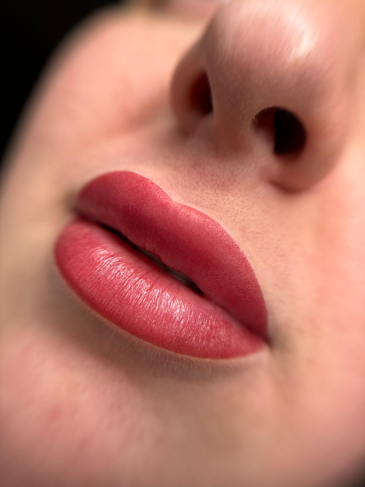
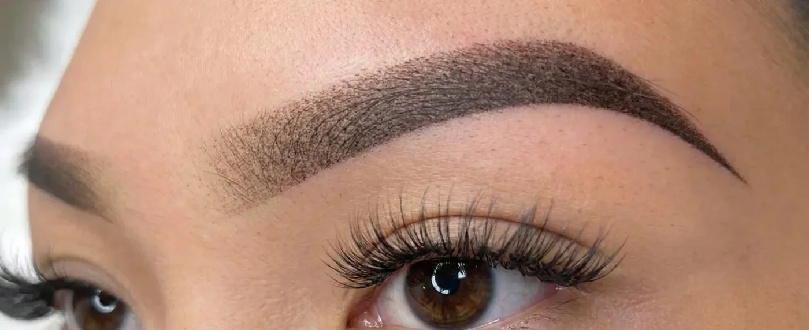
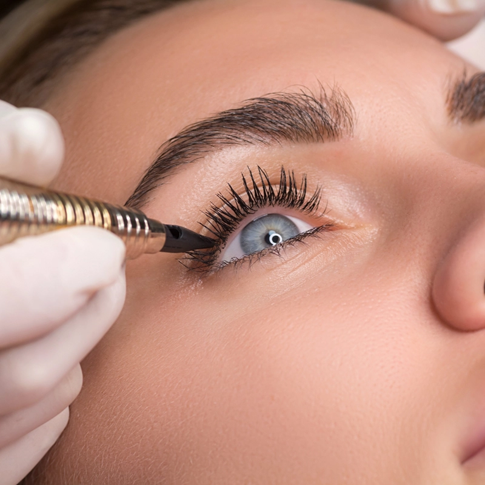

Powder Brows
Zachte schaduw, strak in vorm.
Powder brows geven direct meer rust in je gezicht. De vorm wordt eerst perfect uitgetekend, daarna bouwen we kleur op in zachte lagen voor een natuurlijk en luxe resultaat.
Welkom bij mijn warme, elegante PMU-salon, waar verfijnde behandelingen zorgen voor een stralend resultaat.
Dit zijn de PMU-behandelingen die wij aanbieden, uitgevoerd met bekende technieken voor prachtig resultaat.
Powder Brows
Powder brows geven direct meer rust in je gezicht. De vorm wordt eerst perfect uitgetekend, daarna bouwen we kleur op in zachte lagen voor een natuurlijk en luxe resultaat.

Infralash Eyeliner
Bij infralash plaatsen we pigment subtiel tussen de wimperrand. Je blik oogt direct voller en frisser, terwijl het resultaat zacht en natuurlijk blijft.

Lipblush
Lipblush herstelt toon en contour zonder lipstick-effect. Ideaal als je lippen net wat meer definitie en levendigheid mogen krijgen, elke dag opnieuw.

Nano Combi Brows
Nano combi brows combineren fijne hairstrokes met zachte schaduw. Hierdoor ontstaat een realistisch, vol en verfijnd brow-resultaat met extra diepte.

Touch-up
Touch-up voor powder brows, infralash en nano brows. Zo frissen we kleur en vorm subtiel op, zodat jouw behandeling er langdurig verzorgd en in balans uit blijft zien.


Je gevoel is belangrijk
Elke behandeling heeft een eigen ritme. Daarom verschuift de visuele focus mee: van brows naar lips tot blik, zonder dat het in herhaling valt.
Wenkbrauwen bepalen de basis van je gezicht. Met ombré of powder brows creëren we een zachte, egale schaduw die zorgt voor meer definitie en symmetrie. Het resultaat blijft natuurlijk, maar geeft direct meer rust en structuur.
Bij infralash eyeliner plaatsen we pigment subtiel tussen de wimperrand. Hierdoor lijken je wimpers voller en je ogen sprekender, zonder zichtbare eyeliner. Ideaal voor een frisse, open blik. Elke dag.
Lip blush herstelt de natuurlijke kleur van je lippen en verfijnt de contour. De behandeling geeft een frisse, verzorgde uitstraling zonder lipstick-effect. Perfect als je lippen wat bleker of minder gedefinieerd zijn.
Horizontal showcase · Portfolio gevoel
De horizontale flow vertraagt de pagina bewust. Niet om te imponeren met volume, maar om elk frame de ruimte te geven om een eigen sfeer en materiaalgevoel neer te zetten.
Opgebouwd voor diepte, afgewerkt voor rust. Het soort resultaat dat opvalt omdat het vanzelfsprekend oogt.
Subtiele kleurcorrectie en contour voor een mond die frisser, zachter en vollediger leest.
Licht, pacing, gesprek en nazorg vormen samen de kwaliteit van de behandeling. Luxe zit hier in controle.
Voor artiesten die hun hand willen verfijnen en hun stijl consistenter, rustiger en sterker willen maken.
Testimonials
Meer rust, meer vertrouwen, mooier resultaat. Drie korte ervaringen uit mijn salon.
“
Lieve meid die de tijd voor je neemt. En vertelt wat ze gaat doen. Ik voelde me enorm welkom en ben ontzettend blij met mijn wenkbrauwen. Tot volgend jaar bij de touch op 😃
“
Ben hier erg vriendelijk ontvangen in een prachtige salon door Marissa. Vooraf alles goed besproken en het resultaat……. Geweldig! Heel erg bedankt voor m’n mooie wenkbrauwen. Ik ben er erg blij mee. Dus dames bij twijfel???? Glamour by Tink 👍
“
Vandaag weer bij Marissa geweest voor de touch-up. Even de puntje op de i zetten, waar ze zeker de tijd voor neemt. Vooraf goed advies gehad over de kleur. Ze wil echt het beste en het mooiste voor je wenkbrauwen. Een fijne sfeer en lekkere muziek , ik lag helamaal zen in de stoel. Marissa dank je wel voor mijn super mooie wenkbrauwen !💕
Wil je meer ervaringen lezen of meteen je eigen behandeling plannen?
Boek je moment
Subtiel, elegant en volledig afgestemd op jouw gezicht. Plan je behandeling in en ervaar hoe luxe PMU hoort te voelen.